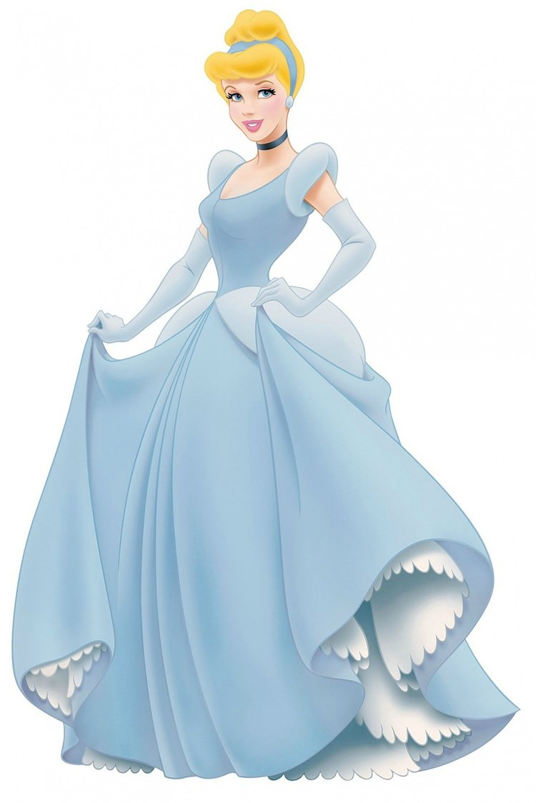
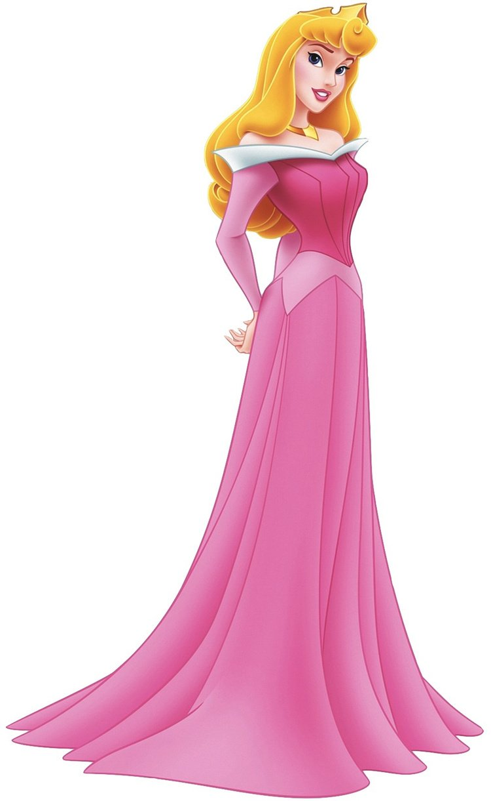
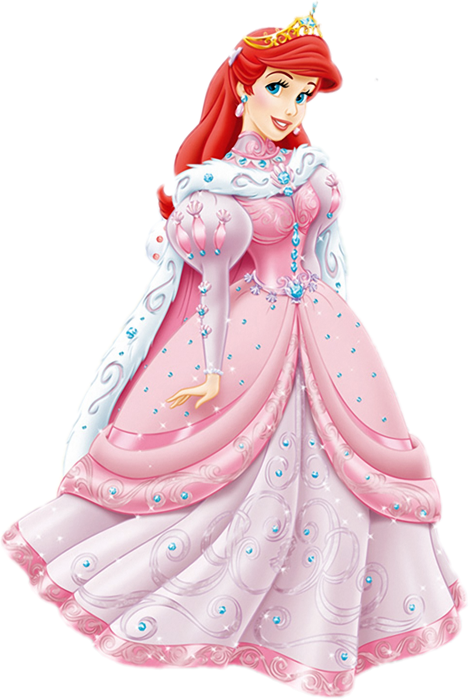
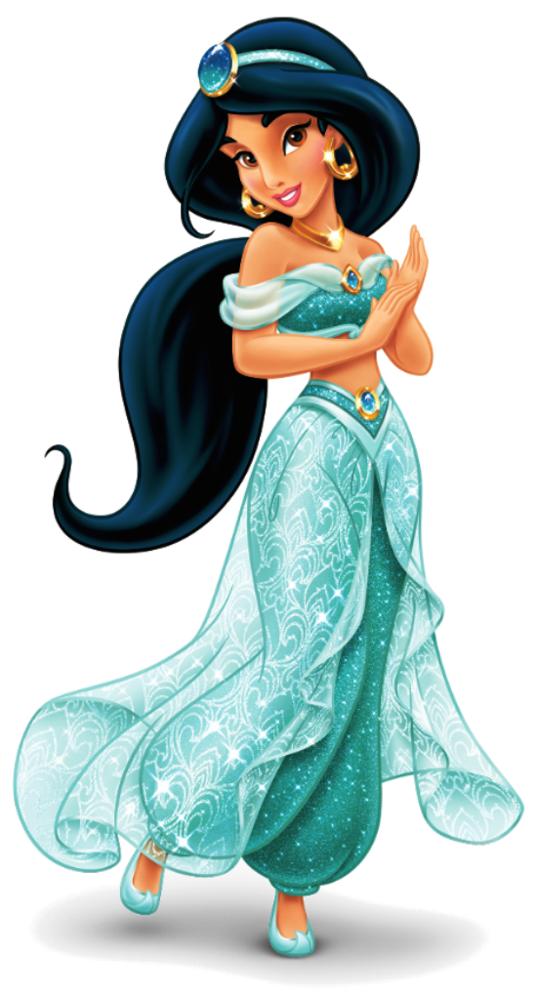
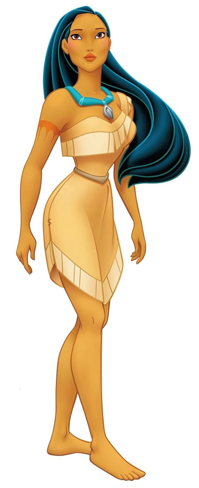
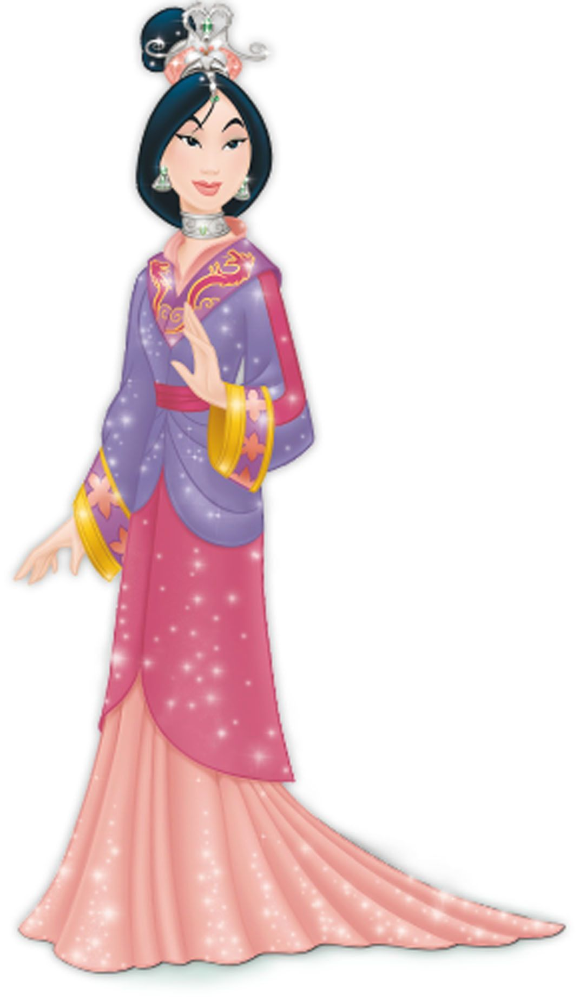
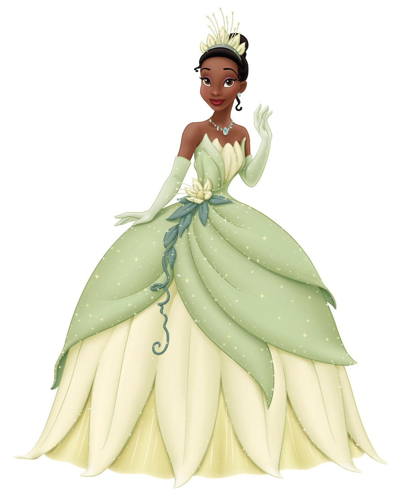
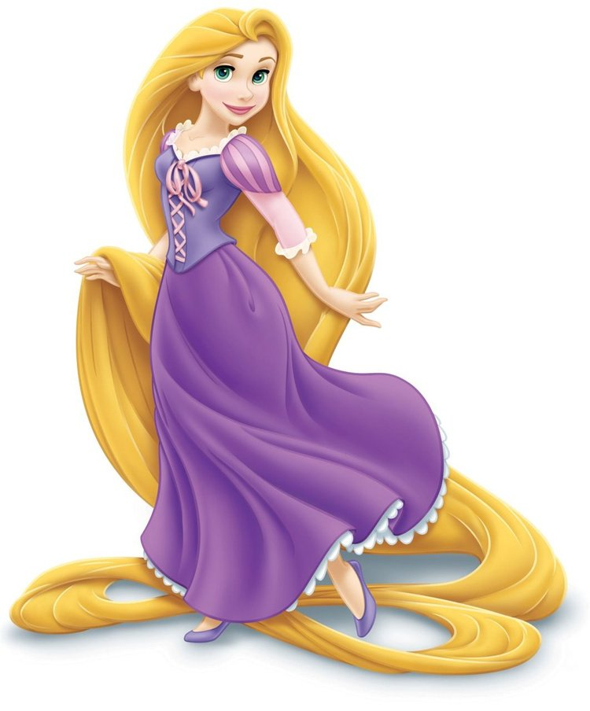
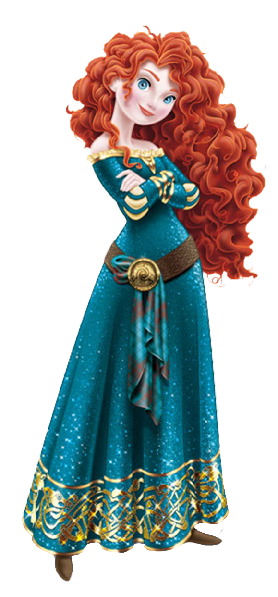
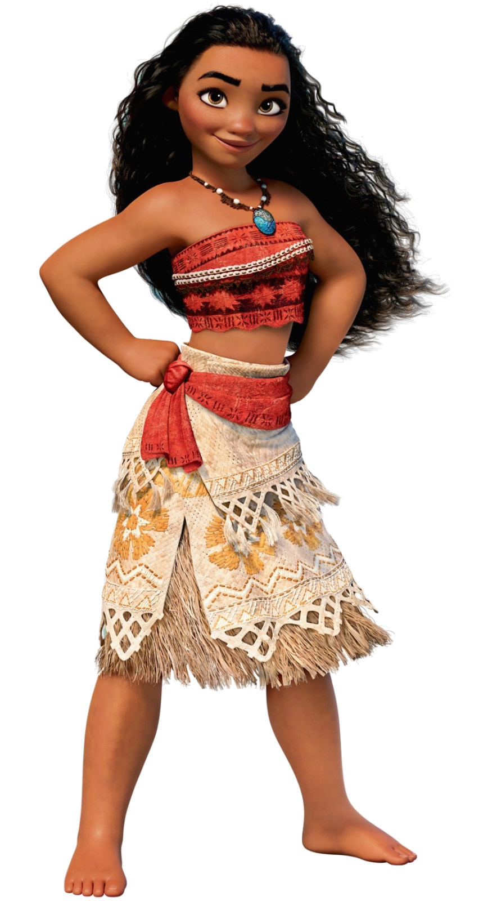

🌺🌺🌺🌺🌺🌺🌺🌺🌺🌺🌺🌺🌺🌺🌺🌺🌺🌺🌺🌺🌺🌺🌺🌺🌺🌺🌺🌺🌺🌺🌺🌺🌺🌺🌺🌺🌺🌺

Branca de Neve não é apenas a primeira princesa oficial da Disney como também é a primeira protagonista de um longa-metragem da história da animação. Alegre e gentil, Branca de Neve encontra na amizade com sete anões da floresta um novo lar, enquanto foge da ira da sua madrasta. Quando é enfeitiçada pela Rainha, disfarçada de velha, Branca de Neve cai em um sono profundo, só podendo ser despertada com um beijo de amor verdadeiro.

Cinderela é a segunda princesa oficial da Disney. Na história, depois da morte do seu pai, ela passa a servir como escrava de sua madrasta e suas irmãs, mas nunca deixa de ser uma jovem amável e cheia de esperanças. Com a ajuda dos pequenos animais de quem é amiga e também da Fada Madrinha, Cinderela vai ao baile do Príncipe Encantado, com quem dança apaixonadamente mas de quem precisa se despedir às pressas uma vez que a magia da Fada Madrinha acaba na última badalada da meia-noite.
Aurora, de A Bela Adormecida e a terceira princesa oficial da Disney. Na trama do filme, uma fada chamada Malévola amaldiçoa a princesa recém-nascida, prevendo que ela cairá em sono profundo em seu aniversário de 16 anos após espetar o dedo numa roca. Por causa disso, Aurora é levada para ser criada por três fadas bondosas, escondida em uma floresta. Infelizmente, elas não conseguem impedir que a predição de Malévola se realize, e Aurora cai no sono, só podendo ser despertada com um beijo de seu amor verdadeiro, o Príncipe Phillip.
Ariel é a protagonista de A Pequena Sereia, a quarta Princesa da Disney e a primeira princesa não humana do estúdio. Em seu filme original, Ariel é apresentada como uma sereia, filha do Rei Tritão de Atlântida, que deseja fazer parte do mundo dos humanos. Depois de se apaixonar pelo Príncipe Eric, um homem que ela salvou de um naufrágio, a jovem sereia faz um trato com a bruxa do mar Úrsula, a fim de ganhar pernas e poder viver na superfície. Em troca, ela entrega sua voz à bruxa.
Bela é a protagonista de A Bela e a Fera e a quinta Princesa da Disney. Ela é uma jovem muito inteligente e leitora voraz, que deseja se aventurar para longe de sua pequena aldeia. Quando seu pai é aprisionado por uma fera misteriosa, dona de um castelo encantado, Bela se oferece em troca da liberdade do homem. No palácio, Bela descobre que o local sofre com uma maldição onde todos os moradores foram transformados em objetos e seu dono, um jovem príncipe, transformado numa fera. Logo, Bela passa a enxergar para além da aparência da criatura e se apaixona pela Fera.

Jasmine é uma personagem de Aladdin e oficialmente a sexta Princesa da Disney. Filha do Sultão, ela é astuta e não abaixa a cabeça para as ideias que discorda, o que inclui o casamento arranjado. Na trama, ela se apaixona por Aladdin, um garoto esperto que habita as ruas próximas ao palácio do Sultão e que encontrou uma lâmpada mágica que realiza desejos. Ao contrário de todas as princesas anteriores, Jasmine é uma personagem coadjuvante de seu filme original, sendo o interesse amoroso do protagonista. Trata-se da primeira Princesa da Disney que não é da Europa, bem como a primeira princesa não-branca do estúdio.
Pocahontas é a protagonista do filme que leva seu nome e a sétima princesa da Disney. É a primeira princesa americana e a primeira que é vagamente baseada em uma figura histórica. No filme, Pocahontas é a única filha do chefe do povo Powhatan. Aventureira e de espírito livre, ela sente que se casar com o homem que seu pai deseja não é o caminho correto a se seguir. Ela cria um vínculo forte com John Smith, um homem inglês pertencente a um grupo de colonizadores que desembarcam em terras americanas, e o ensina sobre sua cultura e sobre a natureza.
Fa Mulan é a protagonista do filme Mulan e a oitava Princesa da Disney. Inspirada em uma figura lendária chinesa, Mulan desrespeita a tradição que diz que apenas homens devem ir à guerra quando seu pai, idoso e doente, é convocado. Disfarçada de homem, a jovem se alista no exército e parte em direção à batalha para defender a China do temível Shan Yu. Mulan é a primeira princesa do Leste Asiático e a primeira que não pertence a uma família real ou que se casou com um príncipe. A personagem é uma das mais elogiadas da franquia da Disney, pois representa um ótimo exemplo para as crianças, a partir de sua determinação, coragem e a não necessidade de se restringir aos padrões de gênero.
Tiana é a protagonista do filme A Princesa e o Sapo e a nona Princesa da Disney. Trata-se da primeira representação negra da franquia e a última personagem originada de um filme de animação tradicional (2D). Na história, Tiana mora em Nova Orleans e tem o sonho de abrir um restaurante, mas no dia que compartilha um beijo com um príncipe que havia sido transformado em sapo, Tiana acaba sendo vítima da mesma maldição. Inteligente, talentosa e muito determinada, Tiana tem um senso de honra muito grande e acredita que vai conseguir tudo o que deseja a partir de seus próprios méritos. Foi uma adesão à franquia da Disney muito elogiada por críticos, que enfatizaram sua personalidade e valores.
Rapunzel é a protagonista de Enrolados, bem como a décima Princesa da Disney, a primeira personagem da franquia originalmente animada por computação gráfica e a primeira princesa europeia da Disney em 20 anos. Na história, Rapunzel é uma jovem cujo cabelo gigantesco tem poderes mágicos. Ela é mantida isolada do mundo em uma torre, criada por uma velha vaidosa chamada Gothel, que usa as habilidades dos cabelos da garota para permanecer sempre jovem. O que Rapunzel não sabe é que ela é uma princesa desaparecida e que seus pais, rei e rainha de um reino não muito distante, nunca pararam de lhe procurar.
Merida é a protagonista de Valente, bem como a décima primeira Princesa da Disney e a primeira princesa que não pertence a um filme da Disney, mas sim da Pixar, estúdio de animação adquirido pela Disney. Na história de Valente, Merida é uma princesa que deve seguir os costumes do seu reino, como o de se casar com um cavalheiro rico e importante. No entanto, o que ela deseja é ser livre para trilhar seu caminho sozinha, o que acaba gerando um abalo na sua relação com a mãe, a Rainha Elinor.
Moana é a personagem principal do filme que leva seu nome e é a décima segunda Princesa da Disney. Na história do longa, Moana parte em uma jornada para salvar seu povo de uma praga e conhece o semideus Maui, que a guia em uma aventura pelos oceanos. Obstinada, corajosa e inteligente, Moana é a quinta princesa não caucasiana da Disney e a segunda a não ter um interesse amoroso. Ela foi amplamente elogiada por sua independência, por seu corpo crível e por abraçar sua cultura.
